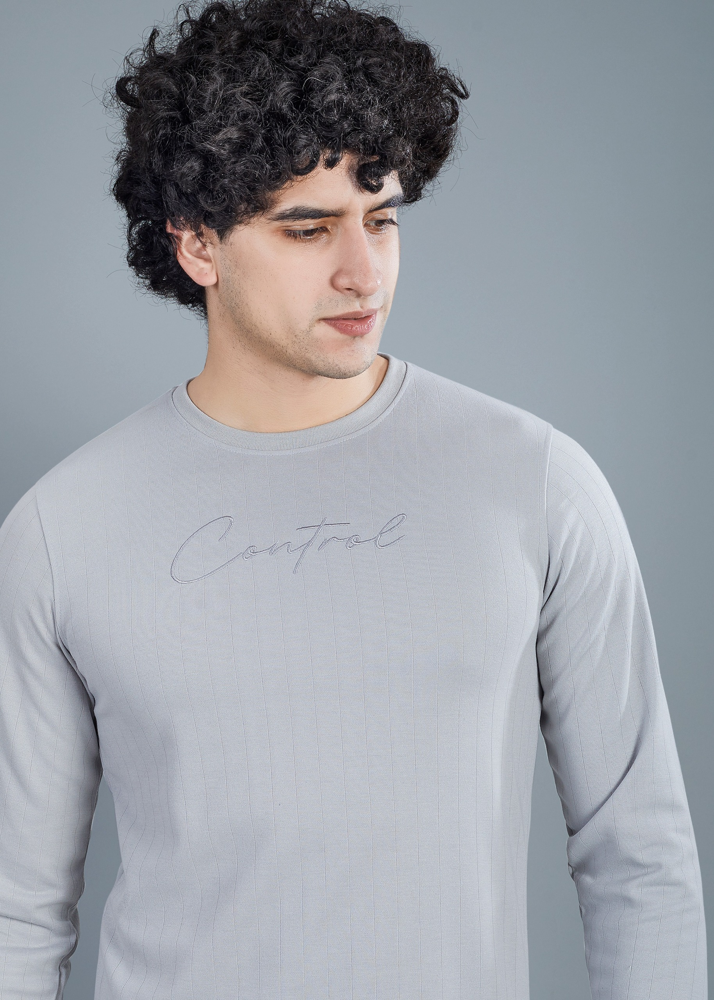
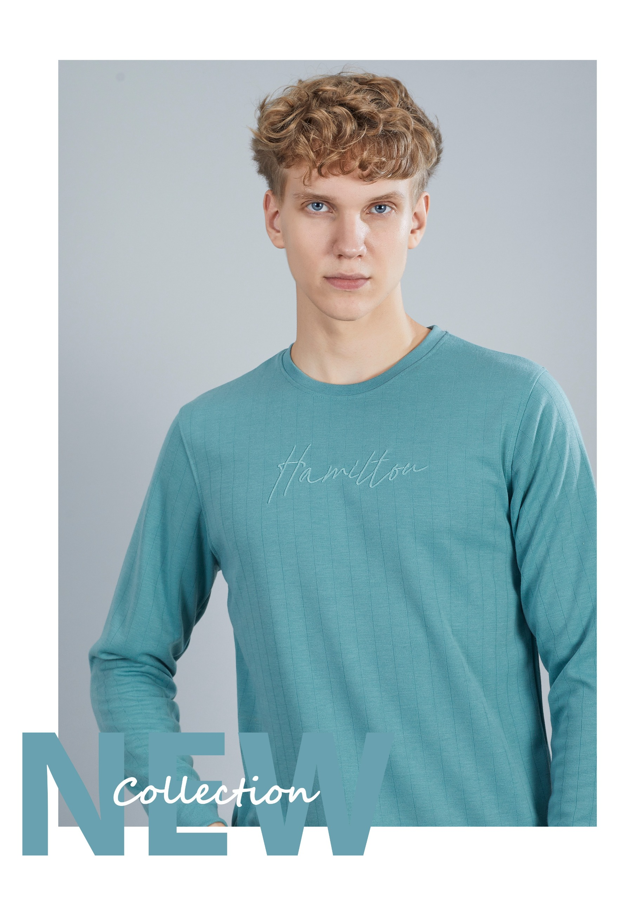
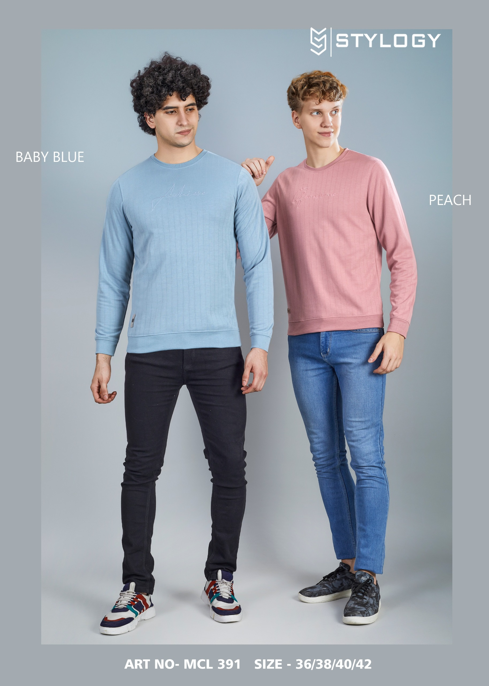
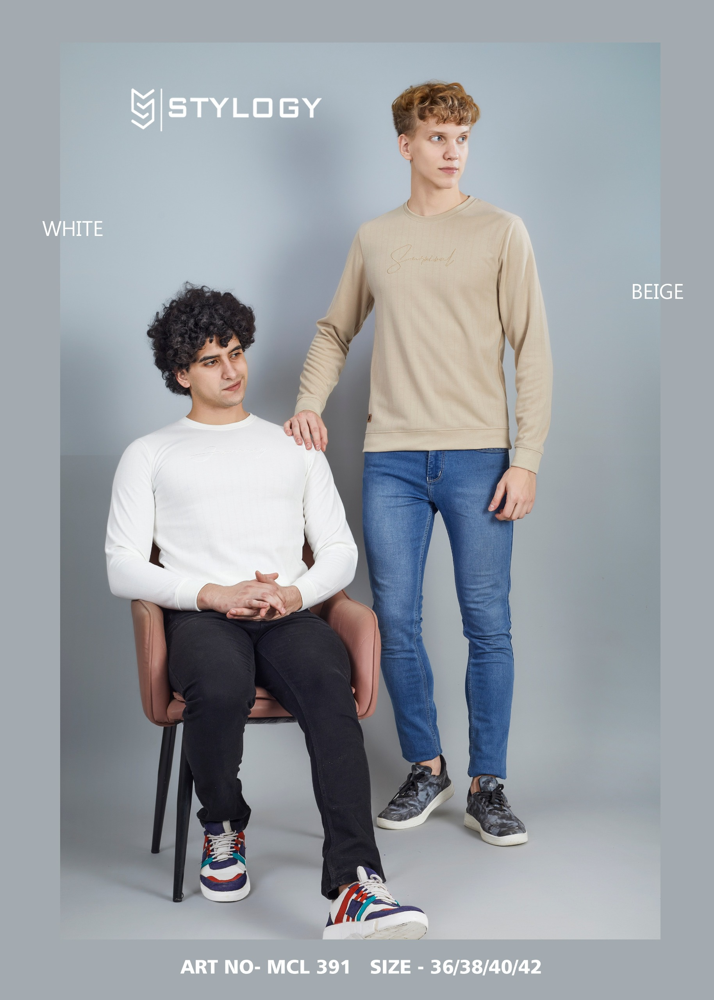
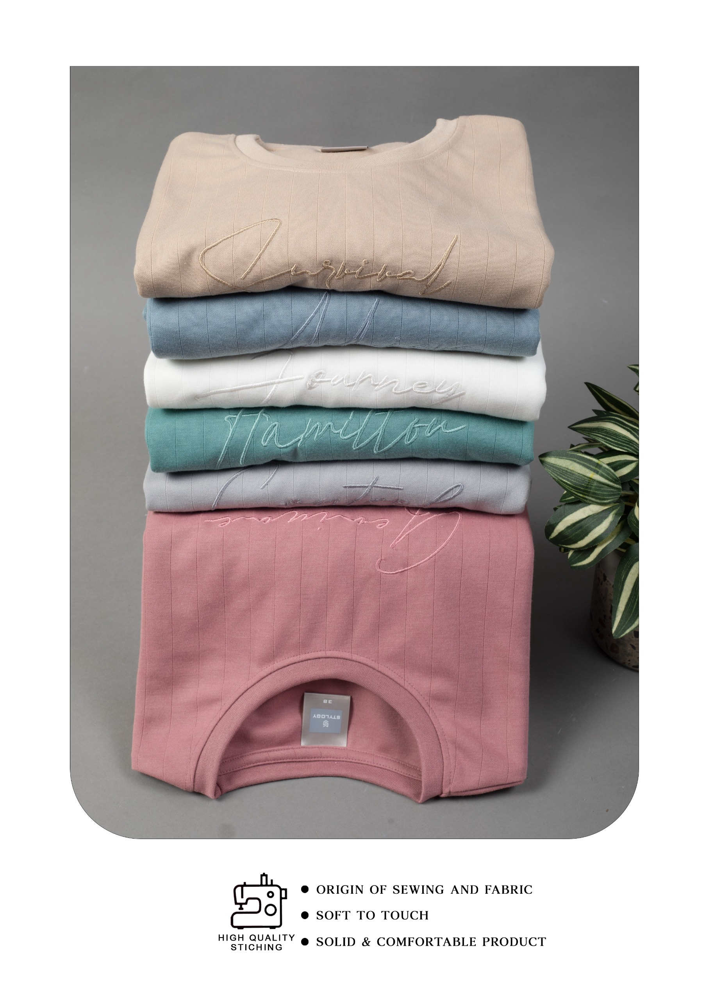
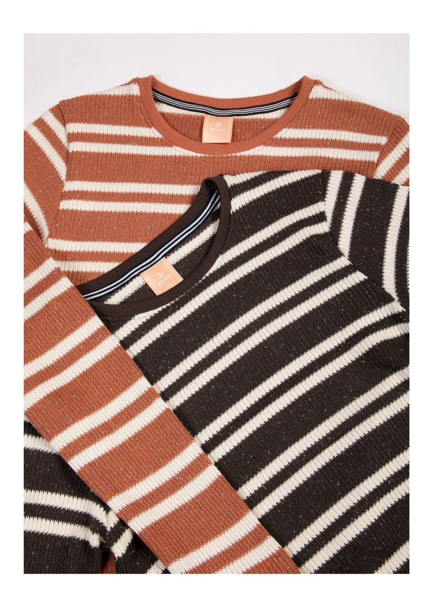
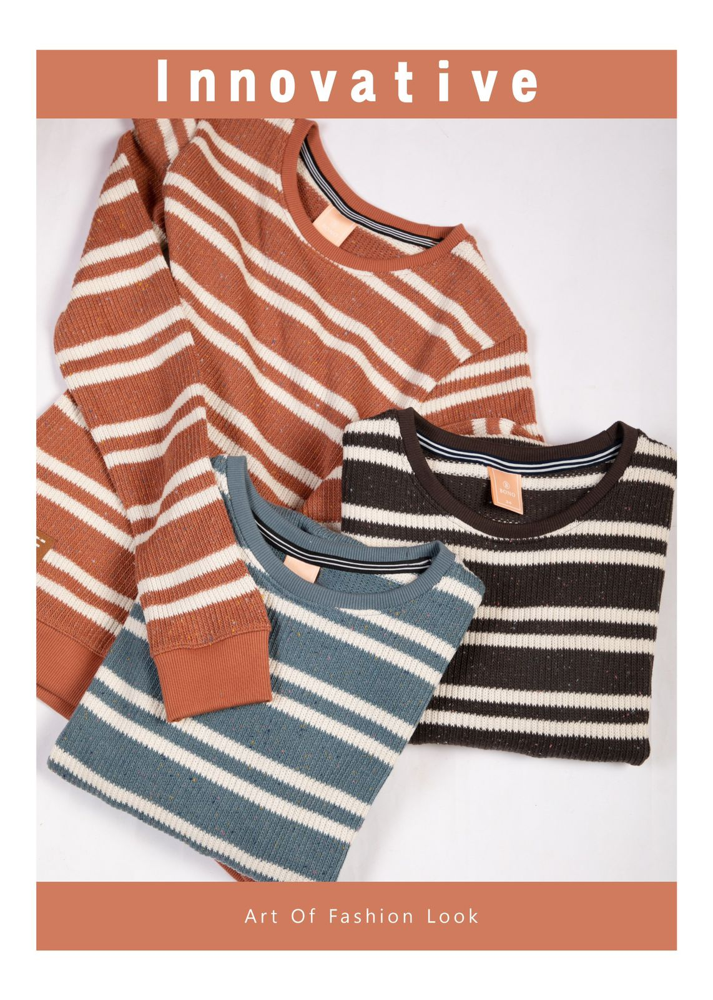

Our Products
-
Cozy Thermal Tees: High-quality, durable fabrics in various designs and colors.

-
Winter Comfort Tops: Comfortable and stylish options for chilly weather.

- Cold-Weather Tees: Perfect for winter, offering comfort and warmth.
- Snuggle Fit T-Shirts: Designed for ultimate comfort during colder days. 
-
Thermal Sleeve Tees: Keep warm with these soft and insulated tees.

- Winter Warmth T-Shirts: Soft, breathable material to keep you cozy in cold weather. 
-
Frost-Resistant Tees: These tees are perfect for combating the chill.

-
Comfy Cold Tees: Comfortable and stylish tees for winter wear.

- SnugFit T-Shirts: A perfect fit for cold weather, offering warmth and comfort. 
-
ColdComfort Tees: The perfect tee for a comfortable winter look.

-
All-Season Warm Tees: Ideal for year-round warmth and comfort.

- ThermoFit T-Shirts: High-performance tees for cold weather. 
-
Cool Breeze T-Shirts: Soft tees designed for comfort and warmth during colder months.

-
WinterFlex T-Shirts: A flexible option for cold weather with a snug fit.

- HeatShield Tees: Provides superior warmth and comfort during cold days. 
-
WarmUp T-Shirts: The perfect layer for keeping the cold at bay.

-
ChillBuster Tees: Defeat the chill in style with these warm and comfy tees.

-
IceGuard T-Shirts: Designed to keep you warm in the coldest weather.

-
WarmthWave Tees: Stay warm with these tees made for cooler temperatures.

-
FreezeProof T-Shirts: Stylish and practical, perfect for winter days.

- SnowFit T-Shirts: Cold-weather tees designed for ultimate comfort. 
- FrostBite Tees: These tees are built for cold days without sacrificing style. 
-
Glacial Tees: The perfect choice for a frosty day, offering warmth and comfort.

- ThermoShield T-Shirts: Stay cozy and stylish with these warm tees.
Designed with precision, our products are tailored to meet the needs of international and domestic clients.